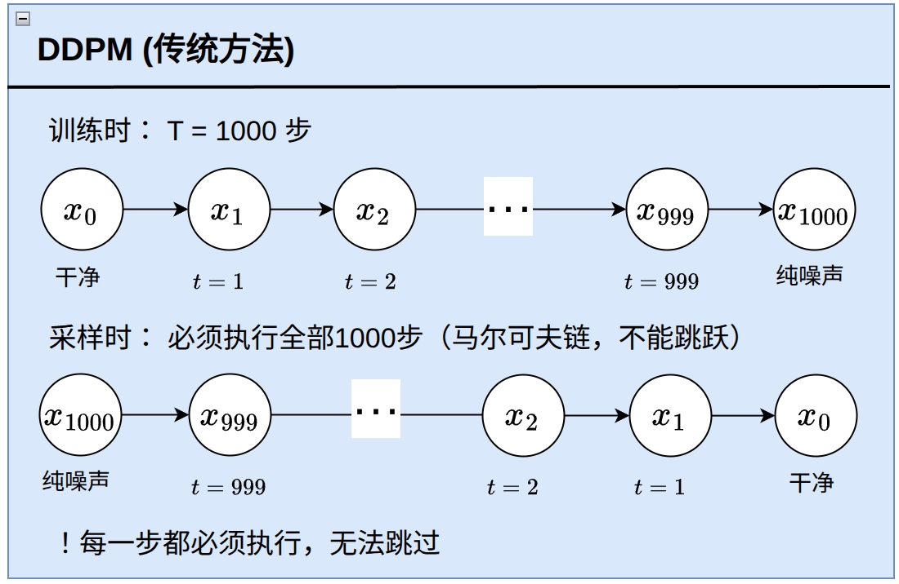
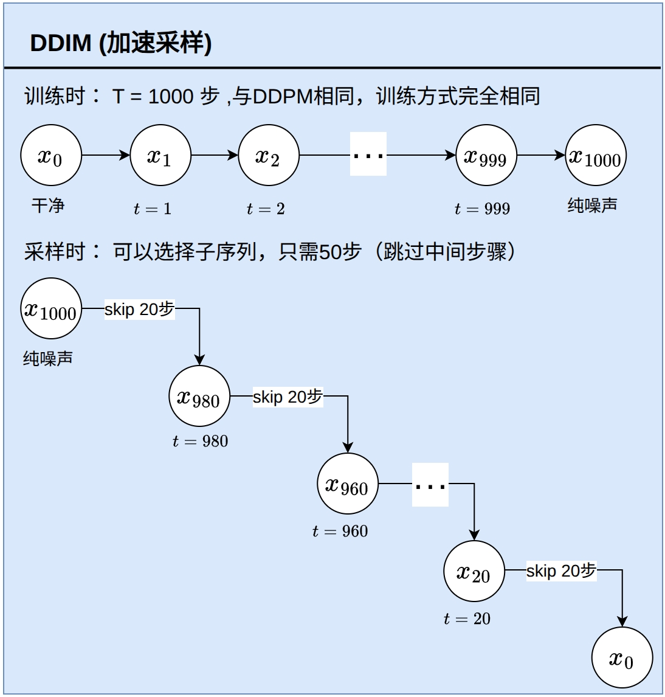
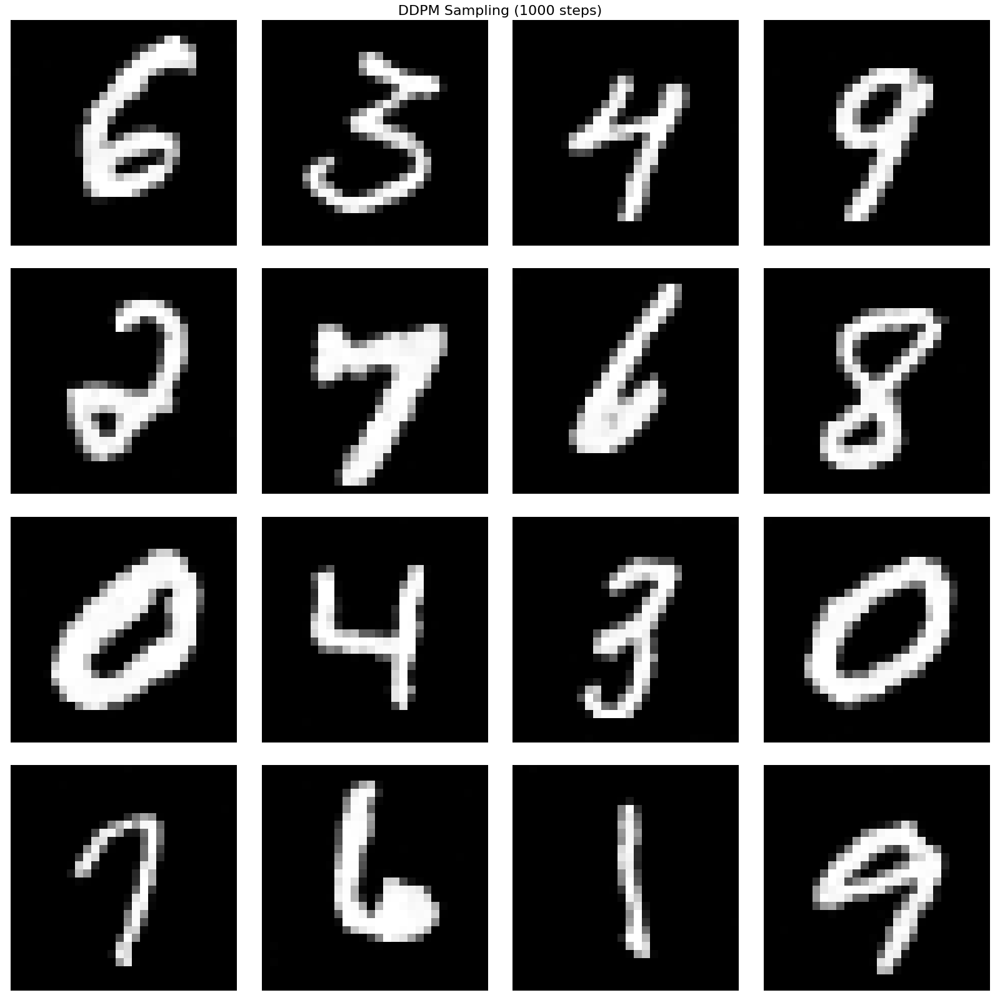
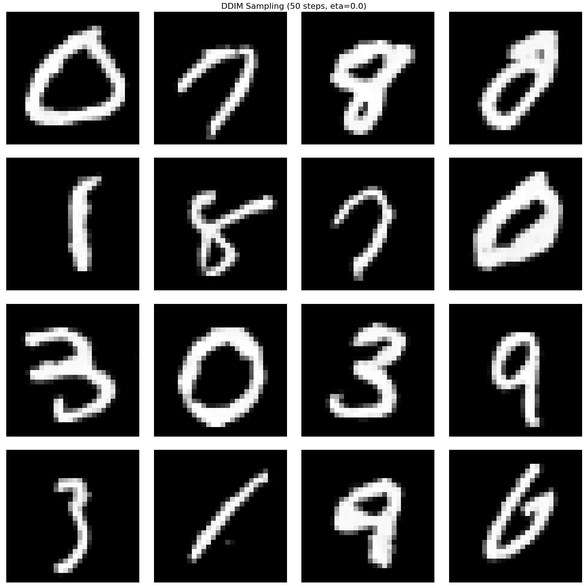

在DDPM中，生成一张图像通常需要1000步去噪过程，这使得采样速度较慢。DDIM（Denoising Diffusion Implicit Models）是DDPM的一个重要改进，它可以在保持生成质量的同时，大幅减少采样步数，实现加速采样。本章将详细介绍DDIM的基本原理和实现方法。
DDPM虽然能够生成高质量的图像，但存在以下问题:
DDIM旨在解决上述问题:

图1 DDPM架构图:展示了DDPM的扩散过程，包括前向过程（逐步加噪）和逆向过程（逐步去噪）。DDPM使用马尔可夫链进行采样，每一步都依赖于前一步的状态，需要完整的1000步才能完成采样。

图2 DDIM架构图:展示了DDIM的扩散过程架构。与DDPM不同的是，DDIM通过重新参数化扩散过程，实现了非马尔可夫的前向过程。核心优势是可以跳过中间步骤进行加速采样（如从1000步减少到50步），并通过eta参数控制确定性或随机性。当eta=0时，采样过程完全确定，支持DDIM反转。
在DDPM中，前向过程定义为:
\[q(x_t|x_{t-1}) = \mathcal{N}(x_t; \sqrt{1-\beta_t}x_{t-1}, \beta_t I)\]
这使得我们可以在任意时间步直接采样:
\[q(x_t|x_0) = \mathcal{N}(x_t; \sqrt{\bar{\alpha}_t}x_0, (1-\bar{\alpha}_t)I)\]
其中 \(\bar{\alpha}_t = \prod_{s=1}^{t}\alpha_s\)，\(\alpha_t = 1 - \beta_t\)。
关键观察:DDIM发现，前向过程并不需要是马尔可夫的。我们可以定义一个非马尔可夫的前向过程，它仍然能够匹配相同的边际分布 \(q(x_t|x_0)\)。
DDIM定义了一个更一般的前向过程，它通过以下方式采样:
\[q_\sigma(x_{1:T}|x_0) = q_\sigma(x_T|x_0)\prod_{t=2}^{T}q_\sigma(x_{t-1}|x_t, x_0)\]
其中:
\[q_\sigma(x_{t-1}|x_t, x_0) = \mathcal{N}(x_{t-1}; \sqrt{\bar{\alpha}_{t-1}}x_0 + \sqrt{1-\bar{\alpha}_{t-1}-\sigma_t^2}\cdot\frac{x_t-\sqrt{\bar{\alpha}_t}x_0}{\sqrt{1-\bar{\alpha}_t}}, \sigma_t^2 I)\]
这里 \(\sigma_t\) 是一个可调参数，控制随机性。当 \(\sigma_t = 0\) 时，过程变为确定性（DDIM）；当 \(\sigma_t = \sqrt{(1-\bar{\alpha}_{t-1})/(1-\bar{\alpha}_t)}\cdot\sqrt{1-\bar{\alpha}_t/\bar{\alpha}_{t-1}}\) 时，过程等价于DDPM。
具体地，采样公式为:
\[x_{t-1} = \sqrt{\bar{\alpha}_{t-1}}x_0 + \sqrt{1-\bar{\alpha}_{t-1}-\sigma_t^2}\cdot\frac{x_t-\sqrt{\bar{\alpha}_t}x_0}{\sqrt{1-\bar{\alpha}_t}} + \sigma_t \epsilon_t \tag{9.0}\]
其中 \(\epsilon_t \sim \mathcal{N}(0, I)\)。
关键特性:
在这个新的定义中: 1. 前向过程没有了马尔可夫的假设:\(q_\sigma(x_{t-1}|x_t, x_0)\) 同时依赖于 \(x_t\) 和 \(x_0\)，而不仅仅是 \(x_t\)（或 \(x_{t-1}\)） 2. 逆向转换核不满足马尔可夫链的定义:在逆向过程中，\(x_{t-1}\) 的生成不仅依赖于上一个状态 \(x_t\)，还依赖于初始状态 \(x_0\)（通过预测 \(\hat{x}_0\) 实现） 3. 因此称之为非马尔可夫扩散过程:这是DDIM的核心创新之一
重要优势:
基于上述观察，DDIM提出了一个更灵活的采样策略。首先，我们从 \(x_t\) 预测 \(x_0\):
\[\hat{x}_0 = \frac{x_t - \sqrt{1-\bar{\alpha}_t}\epsilon_\theta(x_t, t)}{\sqrt{\bar{\alpha}_t}} \tag{9.1}\]
然后，我们使用预测的 \(\hat{x}_0\) 来采样 \(x_{t-1}\):
\[x_{t-1} = \sqrt{\bar{\alpha}_{t-1}}\hat{x}_0 + \sqrt{1-\bar{\alpha}_{t-1}-\sigma_t^2}\cdot\epsilon_\theta(x_t, t) + \sigma_t z_t \tag{9.2}\]
其中 \(z_t \sim \mathcal{N}(0, I)\) 是随机噪声。
简化形式:
将公式(9.1)代入公式(9.2)，我们得到DDIM采样公式:
\[x_{t-1} = \sqrt{\bar{\alpha}_{t-1}}\frac{x_t - \sqrt{1-\bar{\alpha}_t}\epsilon_\theta(x_t, t)}{\sqrt{\bar{\alpha}_t}} + \sqrt{1-\bar{\alpha}_{t-1}-\sigma_t^2}\cdot\epsilon_\theta(x_t, t) + \sigma_t z_t \tag{9.3}\]
为了更方便地控制随机性，DDIM引入了 \(\eta\) 参数（eta）:
\[\sigma_t = \eta \sqrt{\frac{1-\bar{\alpha}_{t-1}}{1-\bar{\alpha}_t}}\sqrt{1-\frac{\bar{\alpha}_t}{\bar{\alpha}_{t-1}}} \tag{9.4}\]
当 \(\eta = 0\) 时，\(\sigma_t = 0\)，采样过程变为完全确定性（DDIM）: \[x_{t-1} = \sqrt{\bar{\alpha}_{t-1}}\frac{x_t - \sqrt{1-\bar{\alpha}_t}\epsilon_\theta(x_t, t)}{\sqrt{\bar{\alpha}_t}} + \sqrt{1-\bar{\alpha}_{t-1}}\cdot\epsilon_\theta(x_t, t)\]
当 \(\eta = 1\) 时，采样过程等价于DDPM的随机采样。
DDIM采样公式（eta参数化）:
\[x_{t-1} = \sqrt{\bar{\alpha}_{t-1}}\hat{x}_0 + c_1 \cdot \epsilon + c_2 \cdot \epsilon_\theta(x_t, t) \tag{9.5}\]
其中:
DDIM采样过程可以概括为以下几个步骤，从 \(x_t\) 采样得到 \(x_{t-k}\):
DDIM采样步骤:
步骤1: 输入当前时间步的噪声图像
输入:\(x_t\)（当前时间步 \(t\) 的噪声图像）
步骤2: 使用U-Net模型预测噪声
\[\epsilon_\theta(x_t, t) = \text{U-Net}(x_t, t)\]
步骤3: 从预测的噪声计算预测的原始图像
\[\hat{x}_0 = \frac{x_t - \sqrt{1-\bar{\alpha}_t}\epsilon_\theta(x_t, t)}{\sqrt{\bar{\alpha}_t}}\]
步骤4: 根据eta参数选择采样方式，计算 \(x_{t-k}\)
情况1:eta=0（确定性采样）
\[x_{t-k} = \sqrt{\bar{\alpha}_{t-k}}\hat{x}_0 + \sqrt{1-\bar{\alpha}_{t-k}}\cdot\epsilon_\theta(x_t, t)\]
- 无随机噪声，完全确定
- 相同输入总是产生相同输出
- 支持DDIM反转
情况2:eta>0（随机采样）
\[x_{t-k} = \sqrt{\bar{\alpha}_{t-k}}\hat{x}_0 + c_1 \cdot \epsilon + c_2 \cdot \epsilon_\theta(x_t, t)\]
其中: - \(\epsilon \sim \mathcal{N}(0, I)\) - 随机噪声变量 - \(c_1 = \eta \sqrt{\frac{1-\bar{\alpha}_{t-k}}{1-\bar{\alpha}_t}}\sqrt{1-\frac{\bar{\alpha}_t}{\bar{\alpha}_{t-k}}}\) - 随机噪声系数 - \(c_2 = \sqrt{1-\bar{\alpha}_{t-k}-c_1^2}\) - 预测噪声系数
- 包含随机噪声，增加生成多样性
- 当 \(\eta=1\) 时，等价于DDPM的随机采样
关键优势:
DDIM的核心优势是可以使用子序列进行采样。假设训练时使用1000步，我们可以选择每20步采样一次（即步长skip=20），这样只需要50步就能完成采样:
# 训练时:t = 1, 2, 3, ..., 1000
# 采样时:t = 0, 20, 40, ..., 980 (50步)
skip = num_timesteps // ddim_steps
seq = list(range(0, num_timesteps, skip))关键原理:由于DDIM采样公式中，每个时间步的更新只依赖于当前的 \(x_t\) 和模型预测 \(\epsilon_\theta(x_t, t)\)，而不依赖于前向过程的马尔可夫链，因此可以跳过中间的时间步。
当 \(\eta = 0\) 时，DDIM采样变为完全确定性的:
\[x_{t-1} = \sqrt{\bar{\alpha}_{t-1}}\frac{x_t - \sqrt{1-\bar{\alpha}_t}\epsilon_\theta(x_t, t)}{\sqrt{\bar{\alpha}_t}} + \sqrt{1-\bar{\alpha}_{t-1}}\cdot\epsilon_\theta(x_t, t) \tag{9.6}\]
这意味着: - 给定相同的初始噪声 \(x_T\)，总是生成相同的图像 - 可以实现精确的图像重建（DDIM反转）
DDIM反转是指将一张真实图像 \(x_0\) 转换为对应的噪声 \(x_T\)，然后可以从这个噪声精确重建原始图像。
反转过程:
对于DDIM（\(\eta=0\)），反转过程很简单:
\[x_{t+1} = \sqrt{\bar{\alpha}_{t+1}}\hat{x}_0 + \sqrt{1-\bar{\alpha}_{t+1}}\cdot\epsilon_\theta(x_t, t)\]
其中 \(\hat{x}_0 = \frac{x_t - \sqrt{1-\bar{\alpha}_t}\epsilon_\theta(x_t, t)}{\sqrt{\bar{\alpha}_t}}\)。
通过反向运行这个过程，可以从 \(x_0\) 得到 \(x_T\)。
DDPM采样公式:
\[x_{t-1} = \frac{1}{\sqrt{\alpha_t}}\left(x_t - \frac{\beta_t}{\sqrt{1-\bar{\alpha}_t}}\epsilon_\theta(x_t, t)\right) + \sigma_t z_t\]
其中 \(\sigma_t = \sqrt{\frac{(1-\bar{\alpha}_{t-1})\beta_t}{1-\bar{\alpha}_t}}\)，\(z_t \sim \mathcal{N}(0, I)\)。
DDIM采样公式（\(\eta=0\)）:
\[x_{t-1} = \sqrt{\bar{\alpha}_{t-1}}\frac{x_t - \sqrt{1-\bar{\alpha}_t}\epsilon_\theta(x_t, t)}{\sqrt{\bar{\alpha}_t}} + \sqrt{1-\bar{\alpha}_{t-1}}\cdot\epsilon_\theta(x_t, t)\]
| 特性 | DDPM | DDIM |
|---|---|---|
| 采样步数 | 必须使用训练时的全部步数（如1000步） | 可以使用更少的步数（如50步） |
| 随机性 | 每一步都有随机噪声（马尔可夫链） | 可以通过 \(\eta\) 控制，\(\eta=0\) 时为确定性 |
| 确定性 | 否 | 是（\(\eta=0\) 时） |
| 反转能力 | 不支持精确反转 | 支持DDIM反转 |
| 灵活性 | 采样过程固定 | 可以灵活选择采样步数 |
重要:DDIM与DDPM使用相同的训练方式！
这意味着:一个训练好的DDPM模型可以直接用于DDIM采样，无需重新训练！
我们创建一个DDIMDiffuser类来实现DDIM采样:
class DDIMDiffuser:
"""DDIM 扩散过程管理器 - 支持加速采样"""
def __init__(self, num_timesteps=1000, beta_start=0.0001, beta_end=0.02,
device='cpu', eta=0.0):
"""
Args:
num_timesteps: 训练时的扩散步数（通常是1000）
beta_start: beta 起始值
beta_end: beta 结束值
device: 设备
eta: DDIM 采样参数，0.0 是完全确定性，1.0 是 DDPM
"""
self.num_timesteps = num_timesteps
self.device = device
self.eta = eta
# 计算 alpha 和 alpha_bar（与 DDPM 相同）
self.betas = torch.linspace(beta_start, beta_end, num_timesteps, device=device)
self.alphas = 1 - self.betas
self.alpha_bars = torch.cumprod(self.alphas, dim=0)关键点: - eta 参数控制随机性（0.0为确定性DDIM，1.0为DDPM） - alpha_bars 的计算与DDPM完全相同
从 \(x_t\) 预测 \(x_0\) 是DDIM的关键步骤:
def predict_x0_from_xt(self, model, x_t, t):
"""
从 x_t 预测 x_0
Args:
model: UNet 模型
x_t: 时间步 t 的图像
t: 时间步 tensor（0-based，从0到num_timesteps-1）
Returns:
pred_x0: 预测的原始图像
pred_eps: 预测的噪声
"""
batch_size = x_t.size(0)
# 计算 alpha_bar
t_idx = t.long()
at = self.alpha_bars[t_idx].view(-1, 1, 1, 1)
# 模型预测噪声（注意:我们的模型使用1-based时间步）
t_1based = t + 1
model.eval()
with torch.no_grad():
pred_eps = model(x_t, t_1based.long())
model.train()
# 从预测的噪声恢复 x_0
# x0 = (xt - eps * sqrt(1 - alpha_bar)) / sqrt(alpha_bar)
pred_x0 = (x_t - pred_eps * (1 - at).sqrt()) / at.sqrt()
return pred_x0, pred_eps公式对应: \[\hat{x}_0 = \frac{x_t - \sqrt{1-\bar{\alpha}_t}\epsilon_\theta(x_t, t)}{\sqrt{\bar{\alpha}_t}}\]
DDIM单步采样实现公式(9.5):
def ddim_step(self, model, x_t, t, t_prev):
"""
DDIM 单步采样:从 x_t 采样 x_{t_prev}
Args:
model: UNet 模型
x_t: 时间步 t 的图像
t: 当前时间步 tensor（0-based）
t_prev: 前一个时间步 tensor（0-based，-1 表示结束）
Returns:
x_prev: 采样得到的 x_{t_prev}
"""
# 预测 x_0
pred_x0, pred_eps = self.predict_x0_from_xt(model, x_t, t)
# 如果 t_prev = -1，表示采样结束，直接返回 pred_x0
if (t_prev < 0).all():
return pred_x0
# 计算 alpha_bar
t_idx = t.long()
at = self.alpha_bars[t_idx].view(-1, 1, 1, 1)
t_prev_idx = t_prev.long()
at_next = self.alpha_bars[t_prev_idx].view(-1, 1, 1, 1)
# 计算 c1 和 c2
# c1 = eta * sqrt((1 - at/at_next) * (1 - at_next) / (1 - at))
c1 = self.eta * ((1 - at / at_next) * (1 - at_next) / (1 - at)).sqrt()
# c2 = sqrt((1 - at_next) - c1^2)
c2 = ((1 - at_next) - c1 ** 2).sqrt()
# DDIM 采样公式
# x_{t_prev} = sqrt(alpha_bar_{t_prev}) * x0 + c1 * noise + c2 * eps
if self.eta > 0:
noise = torch.randn_like(x_t)
else:
noise = torch.zeros_like(x_t) # 确定性采样
x_prev = at_next.sqrt() * pred_x0 + c1 * noise + c2 * pred_eps
return x_prev关键实现细节: 1. 当 t_prev < 0 时，表示采样结束，直接返回预测的 \(x_0\) 2. c1 和 c2 的计算确保采样过程的一致性 3. 当 eta=0 时，使用零噪声（确定性采样）
DDIM采样支持使用子序列进行加速:
def sample(self, model, x_shape, ddim_steps=50):
"""
DDIM 采样:从随机噪声生成图像（加速采样）
Args:
model: UNet 模型
x_shape: 生成图像的形状 (batch_size, channels, height, width)
ddim_steps: DDIM 采样步数（通常远小于 num_timesteps）
Returns:
images: PIL 图像列表
"""
batch_size = x_shape[0]
x = torch.randn(x_shape, device=self.device)
# 生成采样时间步序列（均匀间隔）
# 例如:如果 num_timesteps=1000, ddim_steps=50
# 则采样时间步为 [0, 20, 40, ..., 980]（共50步）
skip = self.num_timesteps // ddim_steps
seq = list(range(0, self.num_timesteps, skip)) # [0, 20, 40, ..., 980]
seq_next = [-1] + list(seq[:-1]) # [-1, 0, 20, 40, ..., 960]
# DDIM 采样循环
with torch.no_grad():
for i, j in zip(reversed(seq), reversed(seq_next)):
t = torch.ones(batch_size, device=self.device) * i # 当前时间步
next_t = torch.ones(batch_size, device=self.device) * j # 下一个时间步
x = self.ddim_step(model, x, t, next_t)
# 确保最终图像在合理范围内
x = torch.clamp(x, 0.0, 1.0)
# 转换为 PIL 图像
images = [self.reverse_to_img(x[i]) for i in range(batch_size)]
return images采样序列生成: - 如果 num_timesteps=1000，ddim_steps=50，则 skip=20 - 采样序列:[0, 20, 40, ..., 980]（共50步） - 下一时间步序列:[-1, 0, 20, 40, ..., 960]（用于计算）
反向循环: - 从最大时间步开始，逐步减小到0 - 最后一个时间步 next_t=-1，表示采样结束
完整的DDIM实现代码:
import torch
from torchvision import transforms
def compute_alpha(beta, t):
"""计算 alpha_bar"""
beta = torch.cat([torch.zeros(1).to(beta.device), beta], dim=0)
a = (1 - beta).cumprod(dim=0).index_select(0, t + 1).view(-1, 1, 1, 1)
return a
class DDIMDiffuser:
"""DDIM 扩散过程管理器 - 支持加速采样"""
def __init__(self, num_timesteps=1000, beta_start=0.0001, beta_end=0.02,
device='cpu', eta=0.0):
self.num_timesteps = num_timesteps
self.device = device
self.eta = eta
self.betas = torch.linspace(beta_start, beta_end, num_timesteps, device=device)
self.alphas = 1 - self.betas
self.alpha_bars = torch.cumprod(self.alphas, dim=0)
def predict_x0_from_xt(self, model, x_t, t):
"""从 x_t 预测 x_0"""
t_idx = t.long()
at = self.alpha_bars[t_idx].view(-1, 1, 1, 1)
t_1based = t + 1
model.eval()
with torch.no_grad():
pred_eps = model(x_t, t_1based.long())
model.train()
pred_x0 = (x_t - pred_eps * (1 - at).sqrt()) / at.sqrt()
return pred_x0, pred_eps
def ddim_step(self, model, x_t, t, t_prev):
"""DDIM 单步采样"""
pred_x0, pred_eps = self.predict_x0_from_xt(model, x_t, t)
if (t_prev < 0).all():
return pred_x0
t_idx = t.long()
at = self.alpha_bars[t_idx].view(-1, 1, 1, 1)
t_prev_idx = t_prev.long()
at_next = self.alpha_bars[t_prev_idx].view(-1, 1, 1, 1)
c1 = self.eta * ((1 - at / at_next) * (1 - at_next) / (1 - at)).sqrt()
c2 = ((1 - at_next) - c1 ** 2).sqrt()
if self.eta > 0:
noise = torch.randn_like(x_t)
else:
noise = torch.zeros_like(x_t)
x_prev = at_next.sqrt() * pred_x0 + c1 * noise + c2 * pred_eps
return x_prev
def sample(self, model, x_shape, ddim_steps=50):
"""DDIM 采样"""
batch_size = x_shape[0]
x = torch.randn(x_shape, device=self.device)
skip = self.num_timesteps // ddim_steps
seq = list(range(0, self.num_timesteps, skip))
seq_next = [-1] + list(seq[:-1])
with torch.no_grad():
for i, j in zip(reversed(seq), reversed(seq_next)):
t = torch.ones(batch_size, device=self.device) * i
next_t = torch.ones(batch_size, device=self.device) * j
x = self.ddim_step(model, x, t, next_t)
x = torch.clamp(x, 0.0, 1.0)
images = [self.reverse_to_img(x[i]) for i in range(batch_size)]
return images
def reverse_to_img(self, x):
"""将张量转换为 PIL 图像"""
x = torch.clamp(x, 0.0, 1.0)
x = x * 255
x = x.clamp(0, 255)
x = x.to(torch.uint8)
x = x.cpu()
to_pil = transforms.ToPILImage()
return to_pil(x)DDIM的主要优势是大幅加速采样过程:
实验表明，使用50步DDIM采样生成的图像质量与1000步DDPM相当，在某些数据集上甚至略优。
当 \(\eta=0\) 时，DDIM提供确定性采样:
DDIM反转使得以下应用成为可能:
DDIM在实际应用中非常受欢迎:
我们对比了DDPM（1000步）和DDIM（50步）的采样效果:

图3 DDPM 1000步采样结果

图4 DDIM 50步采样结果
采样质量对比:
| 采样方法 | 采样步数 | 生成质量 | 采样时间 | 优势 |
|---|---|---|---|---|
| DDPM | 1000步 | 高质量 | ~30s | 生成质量稳定，细节丰富 |
| DDIM | 50步 | 高质量 | ~1.5s | 速度提升20倍，质量相当 |
关键观察:
结论:DDIM通过重新参数化扩散过程，实现了在不损失生成质量的前提下大幅加速采样，这是DDPM的一个重要改进。
DDIM是DDPM的重要改进，通过重新参数化扩散过程，实现了以下核心优势与特性:
DDIM使得扩散模型在实际应用中更加实用:
DDIM的成功证明了采样过程的改进可以与模型架构改进同等重要，为后续的扩散模型研究（如DPM-Solver、Analytic-DPM等）奠定了重要基础。